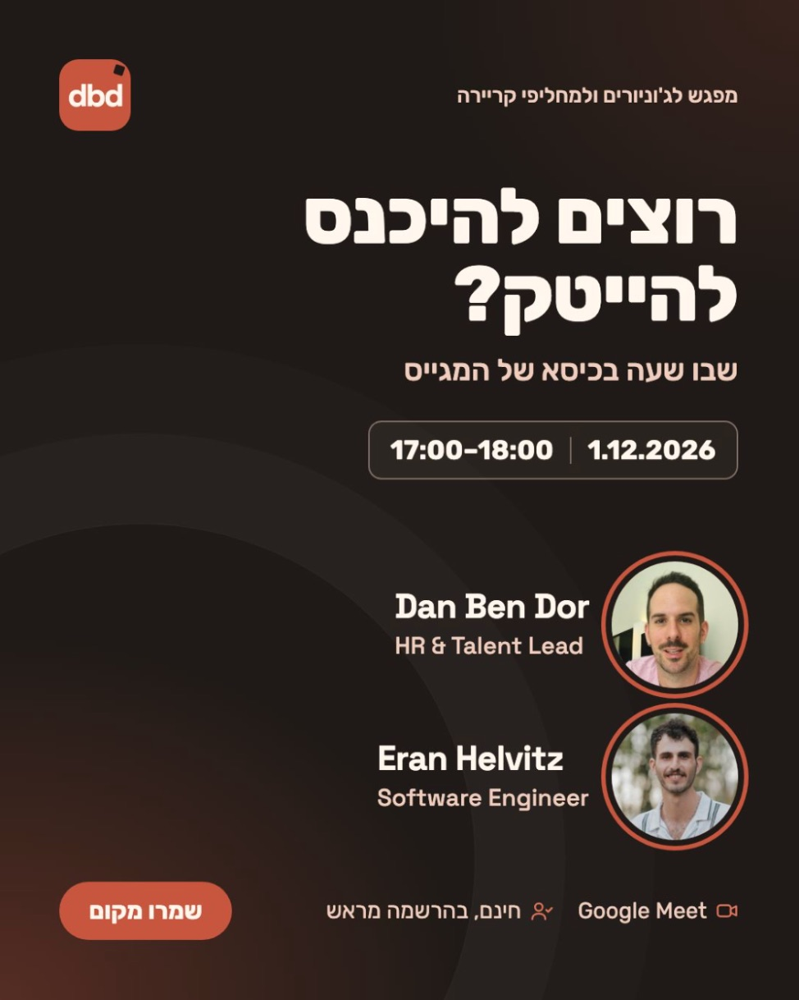

ב-2018, כמעט אחד מכל שלושה עובדים חדשים בהייטק הישראלי היה ג'וניור. ב-2026? אחד מכל עשרה.

ב-2018, כמעט אחד מכל שלושה עובדים חדשים בהייטק הישראלי היה ג'וניור. ב-2026? אחד מכל עשרה!! (מאקו, 10.26)
המגמה כיום ברורה; על כל משרה נוחתת ערימה של 300–400 קורות חיים. רובם נכתבו בעזרת AI, ורובם נראים בדיוק אותו דבר. בחברות טק, 83% מהם נקראים קודם על ידי מערכת, ורק אחר כך, אולי, על ידי בן אדם.
אני מכיר את הערימה הזאת משני הצדדים. ב-2021 נכנסתי להייטק מהמגזר השלישי, בלי ״ניסיון רלוונטי״, לתפקיד גיוס בסטארטאפ. משם סללתי את הדרך בעולמות הגיוס וה-HR ועבדתי צמוד למנהלים על ההחלטות הכי משמעותיות לגבי אנשים: את מי מגייסים, את מי מקדמים, ולמה.
והדבר הכי חשוב שלמדתי:
כשכל קורות החיים נראים אותו דבר, מה שמכריע זה לא עוד קורס ולא עוד מילת מפתח. זה מי מכיר אתכם, ומי מוכן לשים את השם שלו לצד השם שלכם.
אז בואו לשבת רגע בכיסא שלי.
וובינר חינמי: ״בכיסא של המגייס״. שעה שבה נדבר על איך באמת מחליטים מי ממשיך לשלב הבא: מה נפסל בעשר השניות הראשונות, מה מנהל הגיוס שואל את עצמו, ואיך בולטים כשכל קורות החיים נראים אותו דבר. למפגש יצטרף ערן, שיספר איך הצליח להתבלט בכניסה לתפקיד הראשון בסטארטאפ מצליח, שהגיע ללא ניסיון קודם.
למי זה מתאים: ג'וניורים ומחליפי קריירה שמכוונים לתפקידי כניסה בהייטק: Customer Success, Support, SDR, Operations, גיוס ופרודקט.
ומה אחרי: מי שיגיע למפגש יוזמן לקבוצה סגורה ושקטה. בלי רעש, רק דברים ששווה לקרוא: מקרים אמיתיים מחדר ההחלטות (למה מועמד אחד עבר ואחר לא), איך מגיעים לאדם ולא למערכת, וכשמגיעה אליי הזדמנות שמתאימה לג'וניורים, הקבוצה שומעת עליה ראשונה.
שלישי, 1.12.26 | 17:00 | Webinar | ללא עלות
רוצים להצטרף? כתבו ״אני בפנים״ בתגובות לפוסט בלינקדאין ואשלח לכם קישור להרשמה.
מכירים מישהו שמחפש עכשיו עבודה ראשונה בהייטק? תייגו אותו, זה עוזר יותר ממה שנדמה.